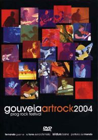

| Artist: | Various Artists |
| Title: | Gouveia Artrock 2004 |
| Label: | Progressivo Portugal |
| Length(s): | 180 minutes |
| Year(s) of release: | 2004 |
| Month of review: | [10/2007] |
| 1) | Arch | |
| 2) | Heal | |
| 3) | Good | |
| 4) | Open | |
| 5) | Eyes | |
| 6) | Idea | |
| 7) | Holy Fools | |
| 8) | Cage | |
| 9) | Unity | |
| 10) | The Pilot | |
| 11) | The Voyage |
Perferia del Mondo (48.47)
| 1) | Luci Da Un Universo Neonato | |
| 2) | Percezioni Della Memoria | |
| 3) | Un Borghese Piccolo Piccolo | |
| 4) | Incani E Perplessita | |
| 5) | Can Stop | |
| 6) | Periferia Del Mondo | |
| 7) | Brand-y | |
| 8) | Solo Clarinetto | |
| 9) | L'infedele |
La Torre dell'alchimista (30.10)
| 1) | Risveglio Procreazione E Dubbio I | |
| 2) | Acquario | |
| 3) | La Persistenza Della Memoria | |
| 4) | Idra | |
| 5) | Epilogo - Risveglio Procreazione E Dubbio II | |
| 6) | La Gnomo |
Fernando Guiomar (16.14)
| 1) | Ibero |
Periferia del Mondo is a jazz oriented outfit, featuring assorted saxes. But there is ample room for progressive moments, too. Still, the bass at times drifts towards a dub feeling, whilst the vocals, sometimes spoken, then sung, doesn't help in pegging the band either. And then there's the poprock approach used as well. Still the general feel is that of instrumental (the vocals are pretty sparse) progressive leaning towards jazz. The performance comes across pretty well, but the music fails to grip me.
La Torre Dell'Alchimista make Italian progressive: lots of lush keys, guitar and the like. The music has complex tendencies, which alternate with more abundant and flowing passages. On the complexish sections the band seem to lose the plot every once in a while, or at least the music tends to take an unexpected turn. The concert footage is spiked up with images of the band's trip, including cajoling with a keyboard in open nature, to which I'd say "quite".
Fernando Guiomar is a Spanish guitar player able enough to keep the attention, despite being, well, alone on stage. The performance is a strong one, even though it seems something of an intermezzo, considering its competition.